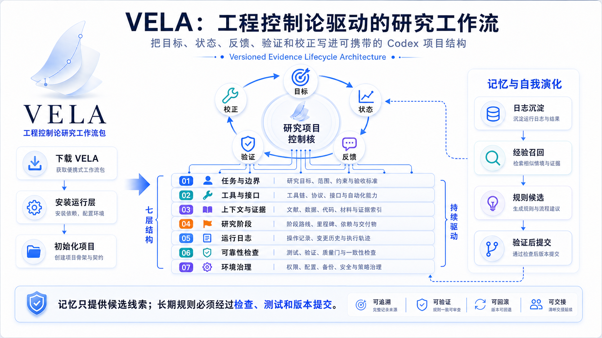
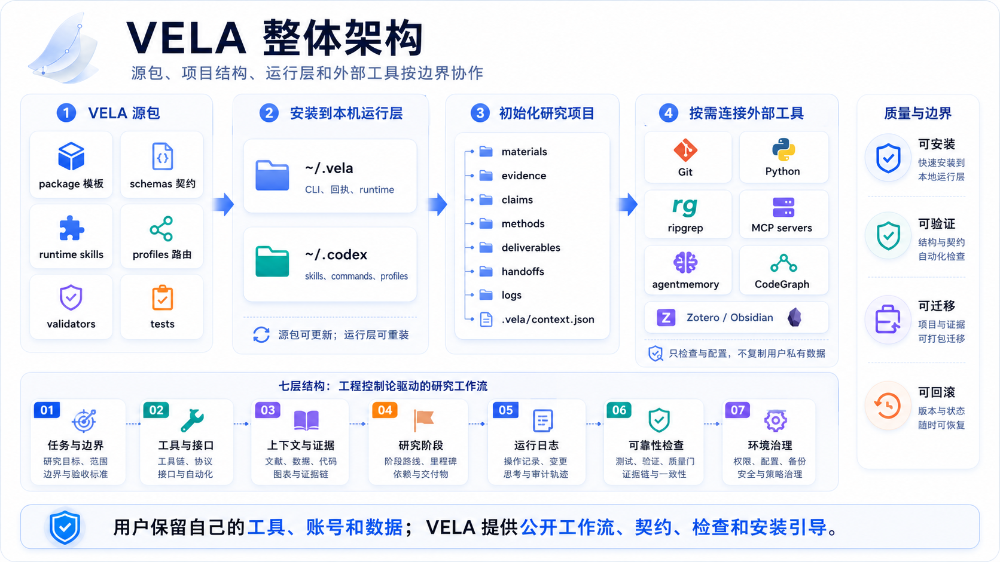
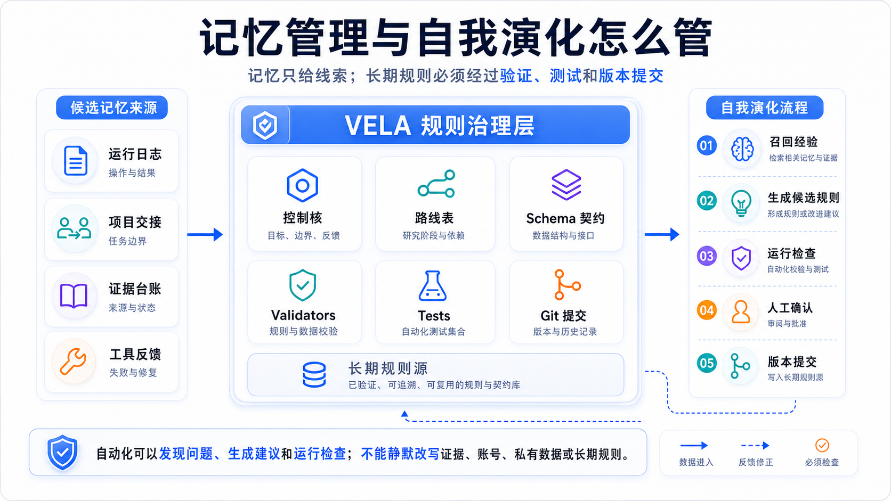
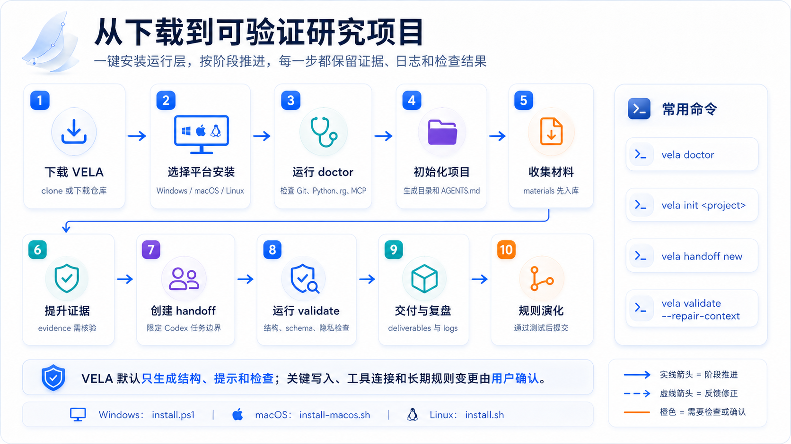

项目结构
materials、evidence、claims、methods、deliverables、handoffs、logs。

VELA 把工程控制论闭环落实为七层研究工作流。
让 Codex 在清楚的项目边界里工作，而不是依赖零散聊天记录。
materials、evidence、claims、methods、deliverables、handoffs、logs。
AGENTS.md 和命令模板让任务范围可读、可复核。
材料、证据、主张和交付物分层管理。
目标、状态、反馈信号、验证门和校正动作都保存在项目文件中。
日志和交接包进入候选改进；长期规则必须经过检查、测试和提交。



git clone https://github.com/Marcus-AI4SS/VELA.git vela cd vela .\install.ps1 -BootstrapTools
git clone https://github.com/Marcus-AI4SS/VELA.git vela cd vela sh ./install-macos.sh
git clone https://github.com/Marcus-AI4SS/VELA.git vela cd vela sh ./install.sh --bootstrap-tools
vela init my-project 创建项目结构和 .vela/context.json。
创建、检查并渲染一个有边界的 Codex 任务。
分享前运行项目验证和隐私扫描。
VELA 可以通过显式本地文件与 HELM 联动，但 VELA 本身是独立工作流包。